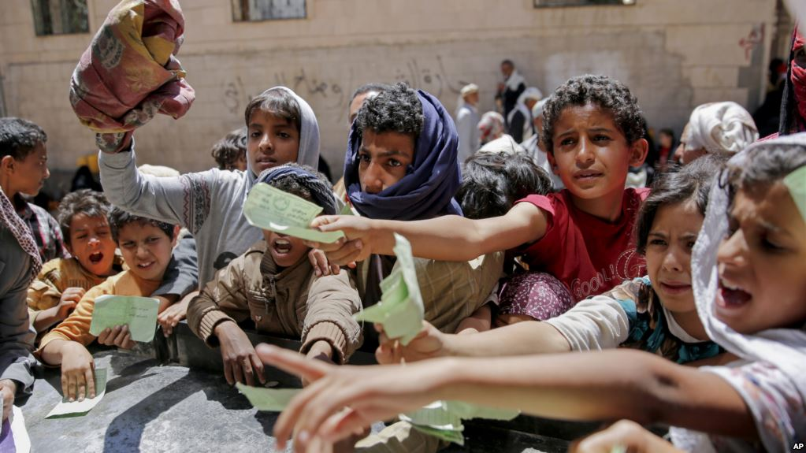

Where there is conflict, there is hunger, and where there is hunger, there is often conflict
After steadily declining for over a decade, global hunger is again on the rise. Conflicts and insecurity are among the root causes. Today, almost all the world’s major food crises – 10 out of 13 – are driven by conflict. Of the more than 800 million people facing hunger, 60 percent live in conflict-affected countries. Removing China and India, this proportion jumps to 90 percent. The youngest among us pay the heaviest price: almost 80 percent of all stunted children are to be found in war-torn nations. UN Security Council Resolution #2417 (2018) recognizes the link between conflict, violence and hunger; expresses deep concern about the threat of famine facing millions of people in armed conflicts and condemns the use of starvation as a method of warfare. Whereas hunger alone may not lead to violence, lack of resources and a sense of injustice can be dangerous when overlaid with sectarian or ethnic differences. Grievances over resources may be further exploited by individuals and groups with an interest in fomenting unrest. The fact is that food is foundational. Without peace, the global goal of Zero Hunger cannot be achieved by 2030; and while there is hunger, we may never have a peaceful world. This is why the United Nations World Food Programme (WFP) has teamed up with the Stockholm International Peace Research Institute (SIPRI). The aim is a deeper understanding of the complex relationships between conflict and hunger and, conversely, of the contributions of food assistance to improving the prospects for peace. Away from the theoretical models, the people portrayed in this exhibition live at the crossroads of hunger and conflict. This is where they will remain, unless conflicts are ended, and human potential is safeguarded through just and equal access to resources.
Hunger and conflict are interconnected, without peace we will never achieve zero hunger. Breaking the links between conflict and hunger can advance both food security and peace.
The two-way links between hunger and conflict are well established. violent conflict is destructive to virtually every aspect of a food system, from production, harvesting, processing, and transport to input supply, financing, marketing,and heightened food insecurity can contribute to violent conflict. Without resolving food insecurity. it is difficult to build sustainable peace, and without peace the likelihood of ending global hunger is minimal.

READ MORE BY CLICKING HERE: